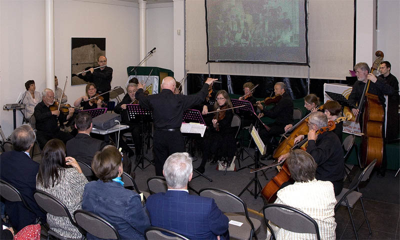
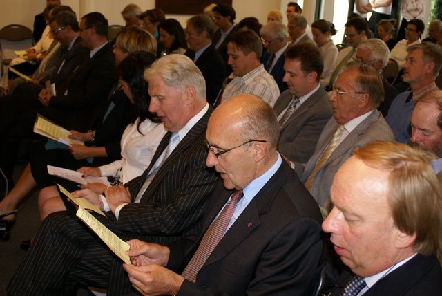

Andante Favore speelt een uitgebreid repertoire dat zich in drie genres laat samenvatten: klassieke, moderne en salonmuziek. Begin 2007 kon het orkest de hand leggen op een grote hoeveelheid partituren in dat laatste genre. Maanden van selecteren, uittesten, adapteren en herorkestreren resulteerden uiteindelijk in een veertigtal pareltjes van salonmuziek. Bij academische zittingen, vernissages, prijsuitreikingen en dergelijke werkt Andante Favore meestal een programma uit van licht verteerbare klassieke muziek, al eens afgewisseld met een rustig modern werk.
Zo speelde Andante Favore tijdens de viering in de Gemeenteraadzaal van Sint-Martens-Latem op 7 juni 2008 bij de viering van 150 jaar Gemeenteschool:
| Werk | Componist / Bewerking |
| Prelude (Suite Antique) | John Rutter |
| Alter Refrain (Wiener Lied) | Fritz Kreisler |
| Adios Nonino | Pascal Kuppens |
| Lied van de Gemeenteschool | Roco Granata – I.Lippens & M.Streulens |
| Melodies and memories | Luc van Acker |
| La Califfa 1970 | Ennio Morricone – J.J. Rossenu |
Andante Favore orkestreerde voor de gelegenheid het gemeenteschoollied, dat de aanwezigen volmondig meezongen:

